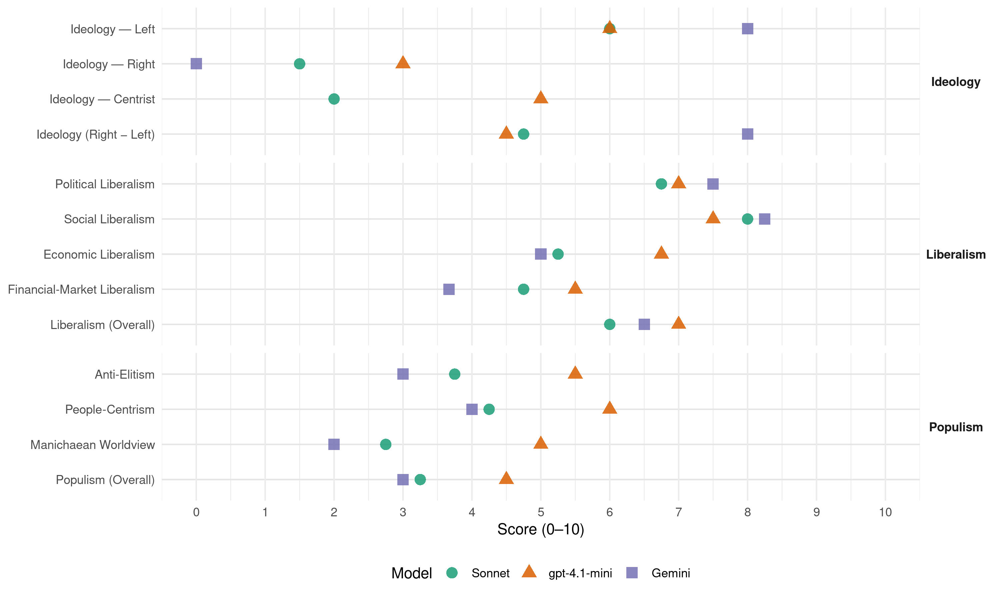

ERC (Spain, 2008)
manifesto_id 33905_200803
Get full text: This site shows derived annotations and short verbatim quotes only. The full manifesto text is © Manifesto Project / WZB — obtain it via manifesto-project.wzb.eu using the manifesto_id above.
Headline scores
| Dimension | Sonnet | gpt-4.1-mini | Gemini |
|---|---|---|---|
| Populism (Overall) | 3.2 | 4.5 | 3.0 |
| Anti-Elitism | 3.8 | 5.5 | 3.0 |
| People-Centrism | 4.2 | 6.0 | 4.0 |
| Manichaean Worldview | 2.8 | 5.0 | 2.0 |
| Ideology (Right − Left) | 4.8 | 4.5 | 8.0 |
| Liberalism (Overall) | 6.0 | 7.0 | 6.5 |
| Political Liberalism | 6.8 | 7.0 | 7.5 |
| Social Liberalism | 8.0 | 7.5 | 8.2 |
| Economic Liberalism | 5.2 | 6.8 | 5.0 |
| Financial-Market Liberalism | 4.8 | 5.5 | 3.7 |
Evidence per dimension
Economic Liberalism
Gemini · score 6.0 · verified · chunk 1
“transparència i de la lliure competència dels mercats”
en aquest àmbit a madrid, seran: Foment de l’economia productiva, … Augment de la transparència i de la lliure competència dels mercats, especialment d’aquells
Gemini · score 7.0 · verified · chunk 2
“garantint la competència real dins del món”
de la quota comercial dels grans grups econòmics, garantint la competència real dins del món del comerç. Impulsar la reforma
Gemini · score 3.0 · verified · chunk 3
“Establir incentius fiscals i laborals a les”
en matèria laboral. Establir incentius fiscals i laborals a les empreses que contractin persones en situació d’exclusió
Gemini · score 4.0 · verified · chunk 4
“descomptes fiscals per als i les joves autònoms/es”
Pla d’ajudes als i les joves emprenedors/es i a l’autoocupació, descomptes fiscals per als i les joves autònoms/es, normalització i per complet la seva
gpt-4.1-mini · score 7.0 · verified · chunk 1
“Foment de l’economia productiva, incentivant la reinversió de beneficis i la seva consolidació”
…Els principis rectors en aquest àmbit a madrid, seran: Foment de l’economia productiva, incentivant la reinversió de beneficis i la seva consolidació a mig i llarg termini a través de la recerca de noves oportunitats de negoci per part de les empreses catalanes…
gpt-4.1-mini · score 6.0 · verified · chunk 2
“Avançar cap a la limitació de la quota comercial dels grans grups econòmics, garantint la competència real dins del món del comerç”
PROPOSTES 1 Fomentar un model comercial actiu i competitiu Avançar cap a la limitació de la quota comercial dels grans grups econòmics, garantint la competència real dins del món del comerç. Impulsar la reforma legislativa corresponent pel que fa a la limitació dels abusos bancaris i manca de transparència sobre les comissions cobrades al comerç, el turisme i la restauració per l’ús de les targetes de crèdit per part dels consumidors.
gpt-4.1-mini · score 7.0 · verified · chunk 3
“reducció dels impostos indirectes que graven l’adquisició d’habitatges”
Millorar el tractament fiscal de les famílies amb persones a càrrec, condicionat pel nivell de renda de la unitat familiar, especialment: Reducció dels impostos indirectes que graven l’adquisició d’habitatges per a la constitució de noves famílies o per haver-se traslladat per causa de necessitats familiars.
gpt-4.1-mini · score 7.0 · verified · chunk 4
“Incentivar, mitjançant desgravacions fiscals, l’aflorament de l’economia submergida”
Eliminar els règims de la seguretat social mancats de drets (treball a la llar). Incentivar, mitjançant desgravacions fiscals, l’aflorament de l’economia submergida en els serveis de proximitat. Fomentar la creació de cooperatives de serveis de proximitat.
Sonnet · score 6.0 · verified · chunk 1
“lliure competència dels mercats”
Augment de la transparència i de la lliure competència dels mercats, especialment d’aquells amb major presència d’oligopolis
Sonnet · score 5.0 · verified · chunk 2
“garantint la competència real dins del món del comerç”
Avançar cap a la limitació de la quota comercial dels grans grups econòmics, garantint la competència real dins del món del comerç.
Sonnet · score 5.0 · verified · chunk 3
“Penalitzar fiscalment les plusvàlues de les transmissions immobiliàries”
Penalitzar fiscalment les plusvàlues de les transmissions immobiliàries de menys de 8 anys com a mecanisme de control de preus i per desincentivar la compravenda especulativa
Sonnet · score 5.0 · verified · chunk 4
“Incentius per fomentar l’autoocupació: microcrèdits”
Incentius per fomentar l’autoocupació: microcrèdits i formació. Facilitar l’accés al permís de treball per compte propi
Financial-Market Liberalism
Gemini · score 5.0 · verified · chunk 1
“sobre les comissions cobrades al comerç”
limitació dels abusos bancaris i manca de transparència sobre les comissions cobrades al comerç, el turisme i la restauració per l’ús de les targetes
Gemini · score 4.0 · verified · chunk 2
“limitació dels abusos bancaris i manca de transparència”
reforma legislativa corresponent pel que fa a la limitació dels abusos bancaris i manca de transparència sobre les comissions cobrades al comerç
Gemini · score 2.0 · verified · chunk 3
“reforma del mercat hipotecari que endureixi”
compravenda especulativa. Impulsar una reforma del mercat hipotecari que endureixi el finançament de la demanda
gpt-4.1-mini · score 6.0 · verified · chunk 1
“Creació de l’oficina Pressupostària al Congrés dels Diputats per poder fer un seguiment acurat i transparent”
…Introducció a totes les Lleis de Pressupostos de què es considera inversió en infraestructures segons el concepte ampli del FMI… Creació de l’oficina Pressupostària al Congrés dels Diputats per poder fer un seguiment acurat i transparent de la despesa pública i de la liquidació dels pressupostos…
gpt-4.1-mini · score 5.0 · verified · chunk 2
“limitació dels abusos bancaris i manca de transparència sobre les comissions cobrades”
Avançar cap a la limitació de la quota comercial dels grans grups econòmics, garantint la competència real dins del món del comerç. Impulsar la reforma legislativa corresponent pel que fa a la limitació dels abusos bancaris i manca de transparència sobre les comissions cobrades al comerç, el turisme i la restauració per l’ús de les targetes de crèdit per part dels consumidors.
Sonnet · score 5.0 · verified · chunk 1
“Sobregravamen dels rendiments de capitals a curt termini”
Sobregravamen dels rendiments de capitals a curt termini. Augment al 25% dels rendiments de l’estalvi
Sonnet · score 5.0 · verified · chunk 2
“limitació dels abusos bancaris i manca de transparència sobre les comissions”
Impulsar la reforma legislativa corresponent pel que fa a la limitació dels abusos bancaris i manca de transparència sobre les comissions cobrades al comerç, el turisme i la restauració per l’ús de les targetes de crèdit
Sonnet · score 5.0 · verified · chunk 3
“reforma del mercat hipotecari que endureixi el finançament”
Impulsar una reforma del mercat hipotecari que endureixi el finançament de la demanda i que contribueixi indirectament al control del sobreendeutament de les famílies.
Sonnet · score 4.0 · verified · chunk 4
“microcrèdits i formació”
Incentius per fomentar l’autoocupació: microcrèdits i formació. Facilitar l’accés al permís de treball per compte propi a les persones amb permís de residència
Political Liberalism
Gemini · score 8.0 · verified · chunk 1
“el principi democràtic per excel·lència”
El dret a decidir no és un principi nacionalista, és el principi democràtic per excel·lència. Precisament, si l’objectiu és
Gemini · score 7.0 · verified · chunk 2
“respecte competencial i lleialtat institucional”
basat en els principis d’equitat en el tracte de les ciutadanes i ciutadans, de respecte competencial i lleialtat institucional, de justícia i adequació
Gemini · score 7.0 · verified · chunk 3
“Poder judicial independent adequat al marc”
PROPOSTES 1 Poder judicial independent adequat al marc constitucional que retorna el dret a l’autonomia
Gemini · score 8.0 · verified · chunk 4
“legitimitat democràtica de tot el sistema”
problemes d’eficiència però també de legitimitat democràtica de tot el sistema comunitari. En estats descentralitzats
gpt-4.1-mini · score 7.0 · verified · chunk 1
“Culminar la Transició i aprofundir en una democràcia pluralista vol dir també avançar cap a un Estat laic”
…La tercera de les condicions té a veure amb la necessitat de culminar la Transició democràtica, i amb que el PSOE deixi d’estar neutralitzat ideològicament per la dreta espanyola. Això implica derogar per antidemocràtica la Llei de Partits… Culminar la Transició i aprofundir en una democràcia pluralista vol dir també avançar cap a un Estat laic, per després donar més passos en matèria de drets i llibertats…
gpt-4.1-mini · score 6.0 · verified · chunk 2
“Garantir la transparència i donant seguretat general al mercat i a les persones”
cal treballar perquè tothom conegui i respecti les normatives vigents, garantint la transparència i donant seguretat general al mercat i a les persones. En aquest punt la col·laboració de la societat civil (les organitzacions de defensa del consumidor, les cooperatives de persones consumidores i usuàries i els diversos agents econòmics i socials implicats) serà fonamental.
gpt-4.1-mini · score 7.0 · verified · chunk 3
“democràtica que tingui en compte el biaix de gènere”
Avançar cap a un nou concepte de participació democràtica que tingui en compte el biaix de gènere. PROPOSTES 1 Prevenció i eradicació de la violència masclista És evident que calen actuacions decidides i valentes, però també recursos per poder desenvolupar serveis i actuacions que aturin aquesta xacra social.
gpt-4.1-mini · score 8.0 · verified · chunk 4
“la defensa de les competències estatutàries ha estat una constant del grup d’Esquerra”
L’existència mateixa del Ministeri de Cultura impedeix la realització d’un marc pluricultural de l’Estat i el desenvolupament de l’exercici de la competència exlusiva en matèria de cultura que estableixen els respectius estatuts d’autonomia. Precisament per això, la defensa de les competències estatutàries ha estat una constant del grup d’Esquerra en qualsevol dels projectes de llei que en matèria cultural s’han anat presentant, com ara la Llei de la Propietat Intel·lectual, la Llei del llibre i la lectura o la Llei del cine.
Sonnet · score 7.0 · verified · chunk 1
“derogar per antidemocràtica la Llei de Partits”
Això implica derogar per antidemocràtica la Llei de Partits, recuperar qüestions tancades en fals
Sonnet · score 6.0 · verified · chunk 2
“Compliment de l’Estatut i de la legislació vigent”
PROPOSTES 1 Compliment de l’Estatut i de la legislació vigent en matèria d’infraestructures
Sonnet · score 7.0 · verified · chunk 3
“democratitzar i socialitzar la justícia”
proposem democratitzar i socialitzar la justícia, el poder judicial i el sistema penitenciari mitjançant la descentralització, la proximitat, la normalització lingüística
Sonnet · score 7.0 · verified · chunk 4
“valors democràtics i la cultura de la pau”
el respecte dels drets humans i col·lectius, els valors democràtics i la cultura de la pau
Liberalism (Overall)
Gemini · score 7.0 · verified · chunk 1
“el principi democràtic per excel·lència”
El dret a decidir no és un principi nacionalista, és el principi democràtic per excel·lència. Precisament, si l’objectiu és
Gemini · score 7.0 · verified · chunk 2
“garantint la competència real dins del món”
de la quota comercial dels grans grups econòmics, garantint la competència real dins del món del comerç. Impulsar la reforma
Gemini · score 5.0 · verified · chunk 3
“Poder judicial independent adequat al marc”
PROPOSTES 1 Poder judicial independent adequat al marc constitucional que retorna el dret a l’autonomia
Gemini · score 7.0 · verified · chunk 4
“igualar-los legislativament en drets i deures”
el cas de les persones que integren el col·lectiu LGBT, l’objectiu d’Esquerra ha estat i és fomentar actituds socials positives, igualar-los legislativament en drets i deures als de les persones heterosexuals.
gpt-4.1-mini · score 7.0 · verified · chunk 1
“Foment de l’economia productiva, incentivant la reinversió de beneficis i la seva consolidació”
…Els principis rectors en aquest àmbit a madrid, seran: Foment de l’economia productiva, incentivant la reinversió de beneficis i la seva consolidació a mig i llarg termini a través de la recerca de noves oportunitats de negoci per part de les empreses catalanes…
gpt-4.1-mini · score 6.0 · verified · chunk 2
“Avançar cap a la limitació de la quota comercial dels grans grups econòmics, garantint la competència real dins del món del comerç”
PROPOSTES 1 Fomentar un model comercial actiu i competitiu Avançar cap a la limitació de la quota comercial dels grans grups econòmics, garantint la competència real dins del món del comerç. Impulsar la reforma legislativa corresponent pel que fa a la limitació dels abusos bancaris i manca de transparència sobre les comissions cobrades al comerç, el turisme i la restauració per l’ús de les targetes de crèdit per part dels consumidors.
gpt-4.1-mini · score 7.0 · verified · chunk 3
“igualtat efectiva de dones i homes”
la Llei orgànica 3/2007, per a la igualtat efectiva de dones i homes. La violència exercida contra les dones és, després dels accidents de trànsit, la segona causa de mort violenta a l’Estat espanyol.
gpt-4.1-mini · score 8.0 · verified · chunk 4
“la defensa de les competències estatutàries ha estat una constant del grup d’Esquerra”
L’existència mateixa del Ministeri de Cultura impedeix la realització d’un marc pluricultural de l’Estat i el desenvolupament de l’exercici de la competència exlusiva en matèria de cultura que estableixen els respectius estatuts d’autonomia. Precisament per això, la defensa de les competències estatutàries ha estat una constant del grup d’Esquerra en qualsevol dels projectes de llei que en matèria cultural s’han anat presentant, com ara la Llei de la Propietat Intel·lectual, la Llei del llibre i la lectura o la Llei del cine.
Sonnet · score 6.0 · verified · chunk 1
“transparència i de la lliure competència”
Augment de la transparència i de la lliure competència dels mercats, especialment d’aquells amb major presència d’oligopolis
Sonnet · score 6.0 · verified · chunk 2
“garantint la competència real dins del món del comerç”
Avançar cap a la limitació de la quota comercial dels grans grups econòmics, garantint la competència real dins del món del comerç.
Sonnet · score 6.0 · verified · chunk 3
“igualtat efectiva de dones i homes”
la Llei orgànica 3/2007, per a la igualtat efectiva de dones i homes. La violència exercida contra les dones és…la segona causa de mort violenta
Sonnet · score 6.0 · verified · chunk 4
“garantir els drets individuals que han de formar”
L’objectiu de les polítiques per a la llibertat sexual és garantir els drets individuals que han de formar part indissoluble de la llibertat col·lectiva
Anti-Elitism
Gemini · score 3.0 · verified · chunk 1
“maltractament de què ha estat objecte Catalunya”
creixent que s’alimenta, sobretot, de la percepció del maltractament de què ha estat objecte Catalunya per part dels successius governs espanyols.
gpt-4.1-mini · score 7.0 · verified · chunk 1
“la percepció del maltractament de què ha estat objecte Catalunya per part dels successius governs espanyols”
…d’una desafecció creixent que s’alimenta, sobretot, de la percepció del maltractament de què ha estat objecte Catalunya per part dels successius governs espanyols. Avui, l’opció més convenient per al catalanisme és la del creixement econòmic…
gpt-4.1-mini · score 4.0 · verified · chunk 2
“defensa del grau de sobirania assolit enfront del possible desplegament «il·legal» de polítiques estatals”
competència exclusiva de la Generalitat de Catalunya (articles 121, 123 i 171 de l’Estatut). És per això que la primera prioritat ha de ser impedir les invasions competencials. Defensa, doncs, del grau de sobirania assolit enfront del possible desplegament «il·legal» de polítiques estatals. PROPOSTES 1 Fomentar un model comercial actiu i competitiu Avançar cap a la limitació de la quota comercial dels grans grups econòmics, garantint la competència real dins del món del comerç.
Sonnet · score 5.0 · verified · chunk 1
“successius governs espanyols”
la percepció del maltractament de què ha estat objecte Catalunya per part dels successius governs espanyols
Sonnet · score 4.0 · verified · chunk 2
“el 5% dels perceptors d’ajuts directes de la PAC s’emportin el 50% dels recursos”
Cal reconduir el desequilibri que suposa a l’Estat espanyol que el 5% dels perceptors d’ajuts directes de la PAC s’emportin el 50% dels recursos de la política de preus i mercats de la UE.
Sonnet · score 3.0 · verified · chunk 3
“el govern espanyol ha cedit davant les pressions del PP”
Però el govern espanyol ha cedit davant les pressions del PP, també en l’àmbit de la justícia, de tal manera que les reformes legislatives de més transcendència…han quedat finalment im-mobilitzades
Sonnet · score 3.0 · verified · chunk 4
“la negativa del PSoE a assumir el reconeixement”
la política d’aliances a diverses bandes i la negativa del PSoE a assumir el reconeixement d’un estat plurinacional, no han permès a Esquerra aconseguir un acord estable
Ideology — Centrist
gpt-4.1-mini · score 5.0 · verified · chunk 1
“el catalanisme del centre cap a l’esquerra només té una expressió no només útil, sinó visible”
…Les pròximes eleccions, el catalanisme del centre cap a l’esquerra només té una expressió no només útil, sinó visible, que és Esquerra Republicana. L’única forma que té el catalanisme d’esquerres de ser valent davant el PSoE és confiar en Esquerra…
Sonnet · score 2.0 · verified · chunk 1
“catalanisme del centre cap a l’esquerra”
Les pròximes eleccions, el catalanisme del centre cap a l’esquerra només té una expressió no només útil
Sonnet · score 2.0 · verified · chunk 2
“dèficit fiscal crònic”
pel dèficit fiscal crònic, perquè estem farts de ser ciutadans de primera a l’hora de contribuir, però de segona a l’hora de beneficiar-nos del que aportem
Sonnet · score 2.0 · verified · chunk 3
“La ciutadania demanda un esforç de millora”
Cal adaptar la justícia a estàndards de qualitat i democràcia. La ciutadania demanda un esforç de millora i modernització del nostre sistema judicial.
Sonnet · score 2.0 · verified · chunk 4
“Esquerra és una eina útil per a la ciutadania”
Esquerra és una eina útil per a la ciutadania, en benefici propi i col·lectiu
Ideology — Left
Gemini · score 8.0 · verified · chunk 1
“treballar des d’una òptica nacional i d’esquerres”
sobretot, assumeix el compromís de treballar des d’una òptica nacional i d’esquerres al Congrés dels Diputats per situar
gpt-4.1-mini · score 7.0 · verified · chunk 1
“imprimir un decidit viratge cap a l’esquerra en polítiques socials”
…respecte a l’Estatut que aprovés el Parlament, i doncs, un canvi en la concepció centralista de l’Estat i un desballestament de tot el búnquer judicial i legislatiu regressiu erigit per l’aznarisme; i segon, imprimir un decidit viratge cap a l’esquerra en polítiques socials. Ara…
gpt-4.1-mini · score 5.0 · verified · chunk 2
“Impulsar iniciatives de comerç just, garantint la transparència de la seva gestió i els seus objectius d’ètica i justícia social”
la quota comercial dels grans grups econòmics, garantint la competència real dins del món del comerç. Impulsar la reforma legislativa corresponent pel que fa a la limitació dels abusos bancaris i manca de transparència sobre les comissions cobrades al comerç, el turisme i la restauració per l’ús de les targetes de crèdit per part dels consumidors. Promoure iniciatives de comerç just, garantint la transparència de la seva gestió i els seus objectius d’ètica i justícia social. Promoure i garantir un comerç exterior basat en el respecte i l’equiparació dels drets socials dels treballadors/res.
Sonnet · score 7.0 · verified · chunk 1
“justícia social, també a Madrid”
Esquerra som la garantia de la defensa de cotes més altes de llibertat nacional i de justícia social, també a Madrid
Sonnet · score 5.0 · verified · chunk 2
“La despesa en polítiques socials a l’estat espanyol ha d’augmentar”
La despesa en polítiques socials a l’estat espanyol ha d’augmentar de l’actual 0,7% del PIB, fins assolir la mitjana europea (2,1% del PIB).
Sonnet · score 6.0 · verified · chunk 3
“Impulsar la Comissió per a l’aplicació de la renda universal bàsica”
Impulsar la Comissió per a l’aplicació de la renda universal bàsica a l’Estat espanyol per començar a implementar de forma progressiva aquest dret a finals de la legislatura.
Sonnet · score 6.0 · verified · chunk 4
“incrementar el salari mínim interprofessional”
fomentar la contractació indefinida i incrementar el salari mínim interprofessional al nivell de vida català
Ideology (Right − Left)
Gemini · score 8.0 · verified · chunk 1
“treballar des d’una òptica nacional i d’esquerres”
sobretot, assumeix el compromís de treballar des d’una òptica nacional i d’esquerres al Congrés dels Diputats per situar
gpt-4.1-mini · score 5.0 · verified · chunk 1
“imprimir un decidit viratge cap a l’esquerra en polítiques socials”
…respecte a l’Estatut que aprovés el Parlament, i doncs, un canvi en la concepció centralista de l’Estat i un desballestament de tot el búnquer judicial i legislatiu regressiu erigit per l’aznarisme; i segon, imprimir un decidit viratge cap a l’esquerra en polítiques socials. Ara…
gpt-4.1-mini · score 4.0 · verified · chunk 2
“defensa del grau de sobirania assolit enfront del possible desplegament «il·legal» de polítiques estatals”
competència exclusiva de la Generalitat de Catalunya (articles 121, 123 i 171 de l’Estatut). És per això que la primera prioritat ha de ser impedir les invasions competencials. Defensa, doncs, del grau de sobirania assolit enfront del possible desplegament «il·legal» de polítiques estatals. PROPOSTES 1 Fomentar un model comercial actiu i competitiu Avançar cap a la limitació de la quota comercial dels grans grups econòmics, garantint la competència real dins del món del comerç.
Sonnet · score 6.0 · verified · chunk 1
“un partit nacional, social i territorial”
som una força política amb un projecte nacional, social i territorial clar
Sonnet · score 4.0 · verified · chunk 2
“La despesa en polítiques socials a l’estat espanyol ha d’augmentar”
La despesa en polítiques socials a l’estat espanyol ha d’augmentar de l’actual 0,7% del PIB, fins assolir la mitjana europea (2,1% del PIB).
Sonnet · score 4.0 · verified · chunk 3
“Impulsar la Comissió per a l’aplicació de la renda universal bàsica”
Impulsar la Comissió per a l’aplicació de la renda universal bàsica a l’Estat espanyol per començar a implementar de forma progressiva aquest dret a finals de la legislatura.
Sonnet · score 5.0 · verified · chunk 4
“lluitar contra aquest estigma que ja ha esdevingut crònic”
L’eradicació de la precarietat laboral a la qual ens veiem immersos és el primer pas per aconseguir l’emancipació… lluitar contra aquest estigma que ja ha esdevingut crònic
Ideology — Right
Gemini · score 0.0 · verified · chunk 1
“un catalanisme de destí, socialment inclusiu”
obert a les noves generacions. Un catalanisme de destí, socialment inclusiu, que no es mira l’origen i la condició
gpt-4.1-mini · score 3.0 · verified · chunk 1
“Frenar el PP continua sent necessari ja que al PSoE la pressió dels conservadors espanyols li serveix d’excusa”
…Si Esquerra aglutina bona part del vot catalanista podrà impedir que el PSoE tingui una majoria asfixiant i, al mateix temps, plantar cara al PP en millors condicions… Frenar el PP continua sent necessari ja que al PSoE la pressió dels conservadors espanyols li serveix d’excusa per posar el fre de mà…
gpt-4.1-mini · score 3.0 · verified · chunk 2
“defensa del grau de sobirania assolit enfront del possible desplegament «il·legal» de polítiques estatals”
competència exclusiva de la Generalitat de Catalunya (articles 121, 123 i 171 de l’Estatut). És per això que la primera prioritat ha de ser impedir les invasions competencials. Defensa, doncs, del grau de sobirania assolit enfront del possible desplegament «il·legal» de polítiques estatals. PROPOSTES 1 Fomentar un model comercial actiu i competitiu Avançar cap a la limitació de la quota comercial dels grans grups econòmics, garantint la competència real dins del món del comerç.
Sonnet · score 2.0 · verified · chunk 1
“nova immigració”
la fortíssima pressió que hi exerceixen fenòmens com l’envelliment i la nova immigració (el milió i mig d’estrangers que hem d’incorporar)
Sonnet · score 1.0 · verified · chunk 2
“controlar les importacions que no compleixin la normativa sanitària comunitària”
controlar les importacions que no compleixin la normativa sanitària comunitària o que provinguin de la pesca il·legal no regulada i no documentada
Sonnet · score 1.0 · verified · chunk 3
“Gestió de la diversitat religiosa i laïcitat”
Gestió de la diversitat religiosa i laïcitat. Garantir el dret d’expressió de les diferents religiositats. Reafirmar la laïcitat de l’Estat.
Sonnet · score 2.0 · verified · chunk 4
“la llengua catalana com a llengua comuna”
Considerar la llengua catalana com a llengua comuna de referència i garantir-ne l’ensenyament a les persones nouvingudes
Manichaean Worldview
Gemini · score 2.0 · verified · chunk 1
“Espanya és avui un fre que ens impedeix”
nascuts aquí o fora. Però tots tenen una cosa clara: Espanya és avui un fre que ens impedeix obtenir la prosperitat que ens mereixem
gpt-4.1-mini · score 5.0 · verified · chunk 1
“no és pas un dilema fals, ni trampós, ni maniqueu, com diuen alguns. És real com la vida mateixa”
…Per això, com a gran objectiu en la nova etapa que comença, Esquerra es proposa mantenir la seva fortalesa per continuar avançant quatre anys més… no és pas un dilema fals, ni trampós, ni maniqueu, com diuen alguns. És real com la vida mateixa. Però això no vol dir que ens haguem de resignar…
Sonnet · score 4.0 · verified · chunk 1
“Espanya és avui un fre”
tots tenen una cosa clara: Espanya és avui un fre que ens impedeix obtenir la prosperitat
Sonnet · score 3.0 · verified · chunk 2
“la triple picaresca de saltar-se les exigències del Protocol”
l’Estat espanyol ha estat 10 anys intentant la triple picaresca de saltar-se les exigències del Protocol, aconseguir reduccions d’emissions a països tercers
Sonnet · score 2.0 · verified · chunk 3
“només Esquerra i les JERC tenen la voluntat”
perquè només Esquerra i les JERC tenen la voluntat i la legitimitat de defensar el jovent
Sonnet · score 2.0 · verified · chunk 4
“només Esquerra i les JERC tenen la voluntat”
perquè només Esquerra i les JERC tenen la voluntat i la legitimitat de defensar el jovent
People-Centrism
Gemini · score 4.0 · verified · chunk 1
“d’escoltar la ciutadania i les seves associacions”
en les institucions en què som presents, la capacitat de donar respostes i proposar solucions, d’escoltar la ciutadania i les seves associacions, de generar projectes
gpt-4.1-mini · score 6.0 · verified · chunk 1
“El dret a decidir no és un principi nacionalista, és el principi democràtic per excel·lència”
…L’única sortida a l’actual marc polític és tenir Estat i construir una majoria social i política per obtenir-lo. El dret a decidir no és un principi nacionalista, és el principi democràtic per excel·lència. Precisament, si l’objectiu és el de tenir Estat…
Sonnet · score 6.0 · verified · chunk 1
“la societat civil catalana”
amb el lideratge de la societat civil catalana. DÈFICIT FISCAL Deixant de banda les infraestructures
Sonnet · score 4.0 · verified · chunk 2
“estem farts de ser ciutadans de primera a l’hora de contribuir”
perquè estem farts de ser ciutadans de primera a l’hora de contribuir, però de segona a l’hora de beneficiar-nos del que aportem
Sonnet · score 3.0 · verified · chunk 3
“La ciutadania demanda un esforç de millora”
Cal adaptar la justícia a estàndards de qualitat i democràcia. La ciutadania demanda un esforç de millora i modernització del nostre sistema judicial.
Sonnet · score 4.0 · verified · chunk 4
“portar la veu del jovent dels Països Catalans”
les Joventuts d’Esquerra han tingut una oportunitat històrica: portar la veu del jovent dels Països Catalans al Congrés dels Diputats
Populism (Overall)
Gemini · score 3.0 · verified · chunk 1
“maltractament de què ha estat objecte Catalunya”
creixent que s’alimenta, sobretot, de la percepció del maltractament de què ha estat objecte Catalunya per part dels successius governs espanyols.
gpt-4.1-mini · score 6.0 · verified · chunk 1
“la percepció del maltractament de què ha estat objecte Catalunya per part dels successius governs espanyols”
…d’una desafecció creixent que s’alimenta, sobretot, de la percepció del maltractament de què ha estat objecte Catalunya per part dels successius governs espanyols. Avui, l’opció més convenient per al catalanisme és la del creixement econòmic…
gpt-4.1-mini · score 3.0 · verified · chunk 2
“defensa del grau de sobirania assolit enfront del possible desplegament «il·legal» de polítiques estatals”
competència exclusiva de la Generalitat de Catalunya (articles 121, 123 i 171 de l’Estatut). És per això que la primera prioritat ha de ser impedir les invasions competencials. Defensa, doncs, del grau de sobirania assolit enfront del possible desplegament «il·legal» de polítiques estatals. PROPOSTES 1 Fomentar un model comercial actiu i competitiu Avançar cap a la limitació de la quota comercial dels grans grups econòmics, garantint la competència real dins del món del comerç.
Sonnet · score 5.0 · verified · chunk 1
“dèficit fiscal i de la desinversió”
l’efecte del dèficit fiscal i de la desinversió fan que el cost de la vida sigui també superior
Sonnet · score 3.0 · verified · chunk 2
“estem farts de ser ciutadans de primera”
perquè estem farts de ser ciutadans de primera a l’hora de contribuir, però de segona a l’hora de beneficiar-nos del que aportem
Sonnet · score 2.0 · verified · chunk 3
“el govern espanyol ha cedit davant les pressions del PP”
Però el govern espanyol ha cedit davant les pressions del PP, també en l’àmbit de la justícia, de tal manera que les reformes legislatives de més transcendència…han quedat finalment im-mobilitzades
Sonnet · score 3.0 · verified · chunk 4
“l’espoli fiscal dels recursos econòmics catalans”
demanem a l’Estat espanyol que aturi l’espoli fiscal dels recursos econòmics catalans en el camp de les telecomunicacions
Social Liberalism